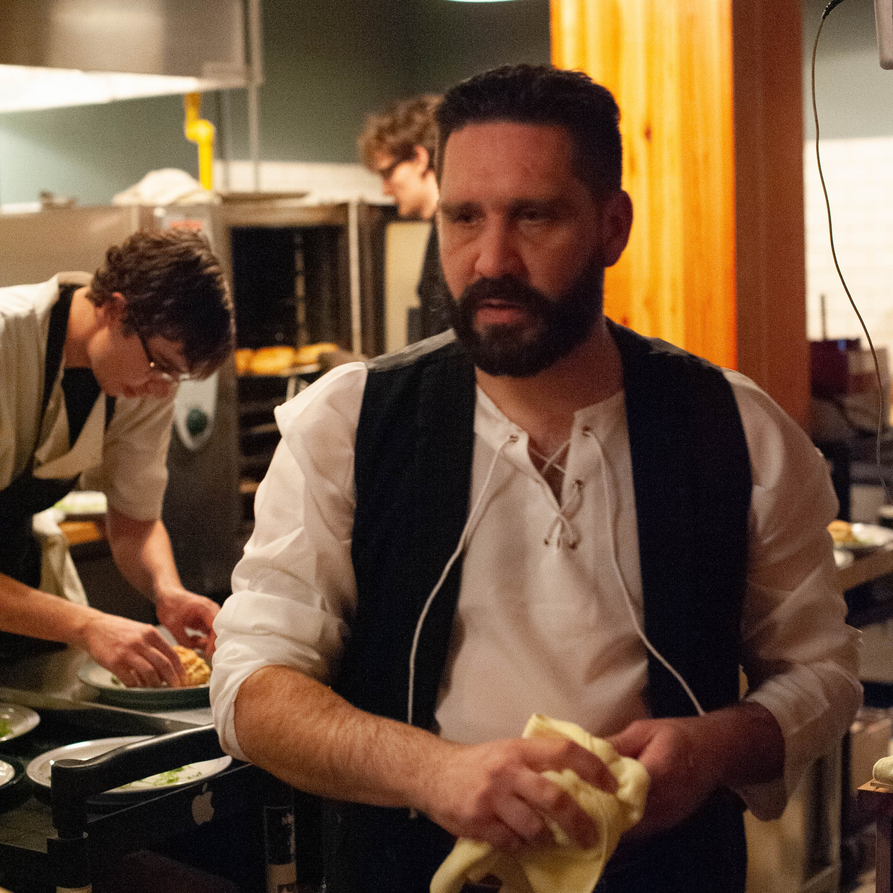

Celtic
Kitchen
Richard has been cooking for over 20 years throughout Canada and the UK. Starting
work with Hilton hotel chains in the east Midlands of England in 1998.
His culinary career has taken him all over Canada, working in Iqaluit and Yellowknife for several
years where he learned more about their indigenous cuisine. After going to school in 2007 at the
Pacific Institute of culinary arts, Richard came back to Alberta where he worked at the Eco cafe.
Here he made amazing relationships with farmers across Alberta. Most of which he retains to this
day.
Taking on a passion for local ingredients, he opened up Zinc at the Art Gallery of Alberta. In 2010
he became head chef at the Bothy Whisky and wine bar where he expanded his knowledge of sous vide
cooking and whisky. From 2012 onward he ran his own catering company which he worked all across
Alberta. Now he is currently the head chef and owner of Celtic Kitchen.

Celtic Kitchen was created out of Richard's passion to fully understand the history and traditions of
Celtic traditions. He has dedicated years of study to traditional foods and events in Celtic
cultures. Every year he holds the annual celebration of Robert Burns to celebrate the Scottish Bard.